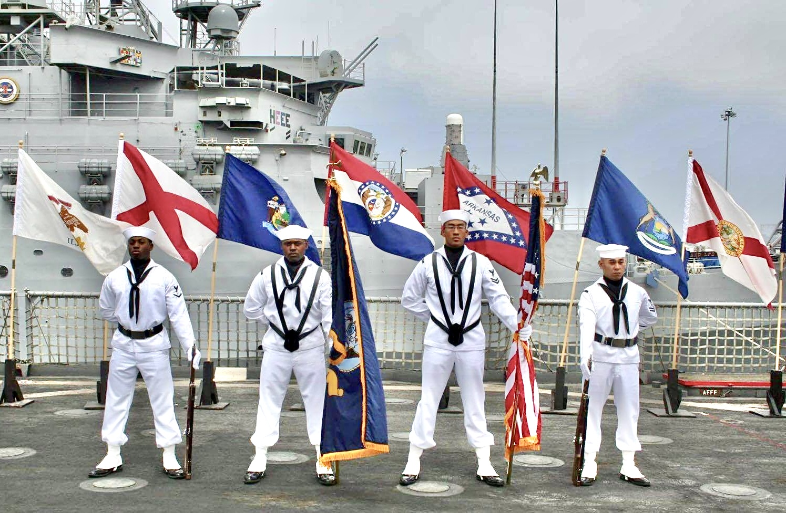

Experience in Opportunity Access, Communication, and Community Systems
My experience connects military service, veteran advocacy, international communication, English coaching, nonprofit support, and community development work. The through-line is practical: helping people and organizations navigate complex systems, communicate clearly, access resources, and move toward usable next steps.

Opportunity access, resource navigation, and practical pathways.
Today, my work centers on opportunity access, resource navigation, English + digital skills, digital readiness, AI literacy, and practical pathway-building for students, young adults, nonprofits, and community-facing organizations in Cabo Verde and beyond.
Independent Learning & Career Resource Hub
Building a mobile-first Learning & Career Resource Hub that helps users find, understand, verify, and act on learning, career, English, digital skills, and study opportunities.
Practical Readiness
Designing support around communication confidence, online learning, responsible AI use, digital tools, and career facing next steps.
Mindelo / São Vicente Pilot
Listening, mapping local assets and barriers, and identifying practical collaboration pathways without duplicating or claiming ownership of local work.
Service, Communication & Community Work Over Time
Tap each entry to expand on mobile. On desktop, the timeline alternates across two columns to show the progression of service, outreach, education, and community development work.
Professional Experience
Building practical opportunity access systems through English + digital skills support, resource navigation, local ecosystem mapping, digital readiness, and program design. Current work includes American Spaces-related volunteer support, nonprofit communication support, and independently developed Learning & Career Resource Hub systems for students and young adults.
- Support English conversation and skills based learning activities in coordination with local American Spaces leadership when activities are approved or coordinator-directed.
- Develop practical workshop and resource navigation concepts around English, digital readiness, AI literacy, career development, and opportunity access.
- Provide communication and English language support to Simabo staff while identifying workflow, coordination, and process-improvement needs.
- Contribute to local ecosystem mapping by identifying community services, learning resources, and collaboration pathways in Mindelo / São Vicente.
- Maintain clear separation between independent platform work, volunteer contributions, and official institutional programming.
- Provide professional résumé optimization, content editing, and English communication coaching for U.S. and international clients.
- Develop online learning resources and digital storytelling materials for individuals and small organizations.
- Research and integrate AI-assisted tools to improve writing, productivity, and online learning outcomes.
- Advise international and remote teams on cross-cultural communication strategies and professional presentation.
- Coached 150+ Belarusian and Ukrainian IT professionals in English fluency, business communication, and presentation skills.
- Created and managed Americana Made Easy, a Telegram-based resource hub for self-paced English learning designed for Russian-speaking professionals working with American clients.
- Designed personalized lesson materials integrating American cultural context, confidence-building, and practical workplace language usage.
- Edited and presented live English language news bulletins and pre-recorded interviews covering Ukraine and world affairs for audiences in 30+ countries.
- Conducted expert interviews across politics, economics, military affairs, the IT sector, and arts and culture.
- Adapted complex, fast moving news content for international audiences, maintaining clarity under live broadcast conditions.
Taught Pre-intermediate to Advanced ESL classes of 4–12 students (ages 12–60), bridging curriculum content to real-life speaking situations. Created a supplementary Telegram channel for daily feedback and language coaching between sessions.
- Scheduled 50+ veterans weekly for Compensation & Pension exams across 48 U.S. states and territories, meeting a contractually required 21-day turnaround.
- Educated and advised 100+ veterans daily on VA disability benefits, supportive services, and exam procedures.
- De-escalated irate, threatening, or potentially suicidal veteran contacts while maintaining a safe environment for staff and clients.
- Utilized the Operations Management System (OMS) to track and resolve 100+ daily veteran concerns across 48 states and 5 international sites.
- Provided weekly coaching and essential training to 33+ call center representatives.
- Advised 200+ military and veteran students on transitional resources and VA benefits through peer counseling, mentoring, and structured outreach.
- Spearheaded the creation of transitional programs including workshops, information sessions, a community resource database, and a student resource packet.
- Conceived and executed APU’s first Military & Veteran Resource Fair with 50+ community partners and $5,000 in clothing and food donations.
- Planned and executed APU’s first Veteran Awareness Week.
- Supervised and maintained inventory control over $200,000 in annual merchandise with 95% accuracy.
- Led a team of four in supply department operations across three deployments spanning 10 countries.
- Completed Operation Iraqi Freedom (Iraq, 2006–2007), Operation Enduring Freedom (Afghanistan, 2009), and RIMPAC (Hawaii, 2008).
- Earned the Enlisted Surface Warfare Specialist (ESWS) pin.
Community Service Beyond Formal Roles
These experiences reflect a longer-standing pattern of community involvement—supporting vulnerable populations, organizing practical support, and creating spaces where people can find resources, connection, and encouragement.

Organized monthly meetings and outreach events connecting veteran job seekers with employers, federal and state agencies, and social support providers. Co-organized the 3rd Annual Heroes in the Shadows Homeless Veteran Stand Down, serving 500+ disadvantaged veterans and their families.
Oversaw a team of five in weekly operations for a Monday night young adult outreach ministry, managing event logistics and facilitating community connection across a diverse urban population.
Served across multiple outreach ministries supporting vulnerable communities throughout San Diego, including convalescent homes, homeless street outreach, and engagement with women in prostitution—offering encouragement, relationship, and connection to helpful resources.
Education and Certifications
Leadership development, organizational communication, and team performance in diverse professional settings.
Strategic management, ethics, human relations, and organizational change.
Instructional design models, adult learning theory, and educational technology integration.
Advanced coursework in theology, ethics, and communication.
Full-time immersion in grammar, conversation, and cross-cultural communication.
Intensive entrepreneurship and business-planning program for transitioning military veterans.
Completed Train-the-Trainer (TtT) requirements; qualified to deliver continuity planning curriculum.